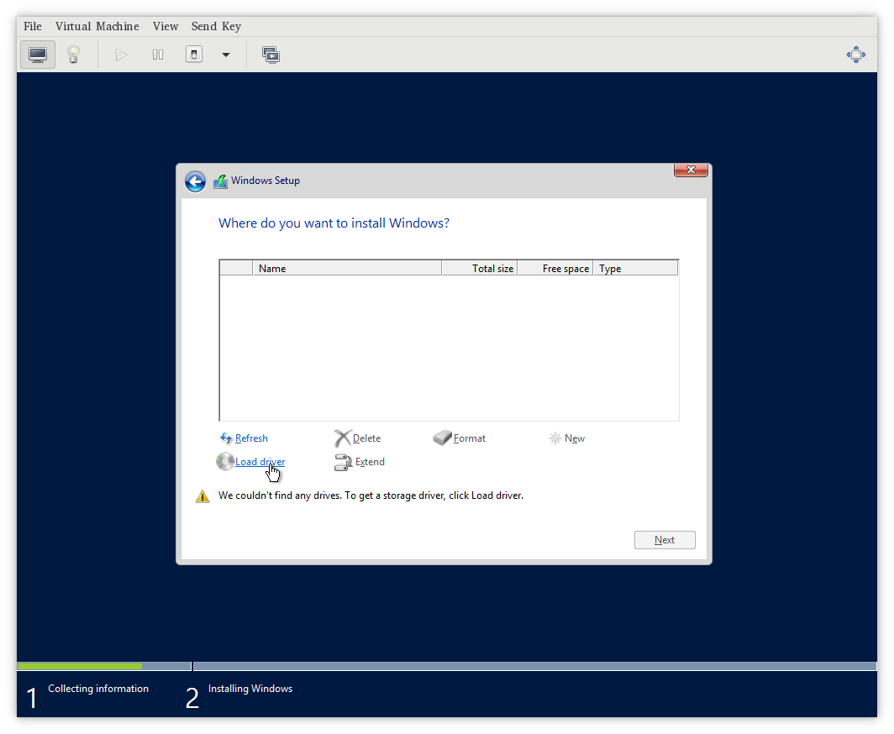
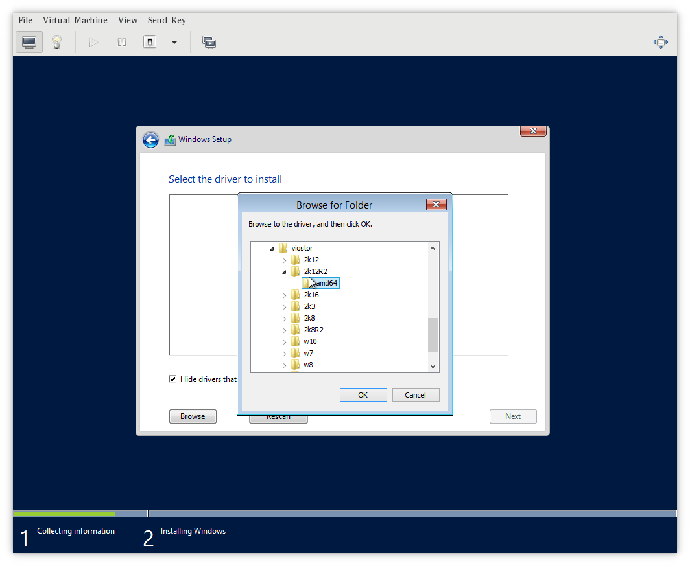
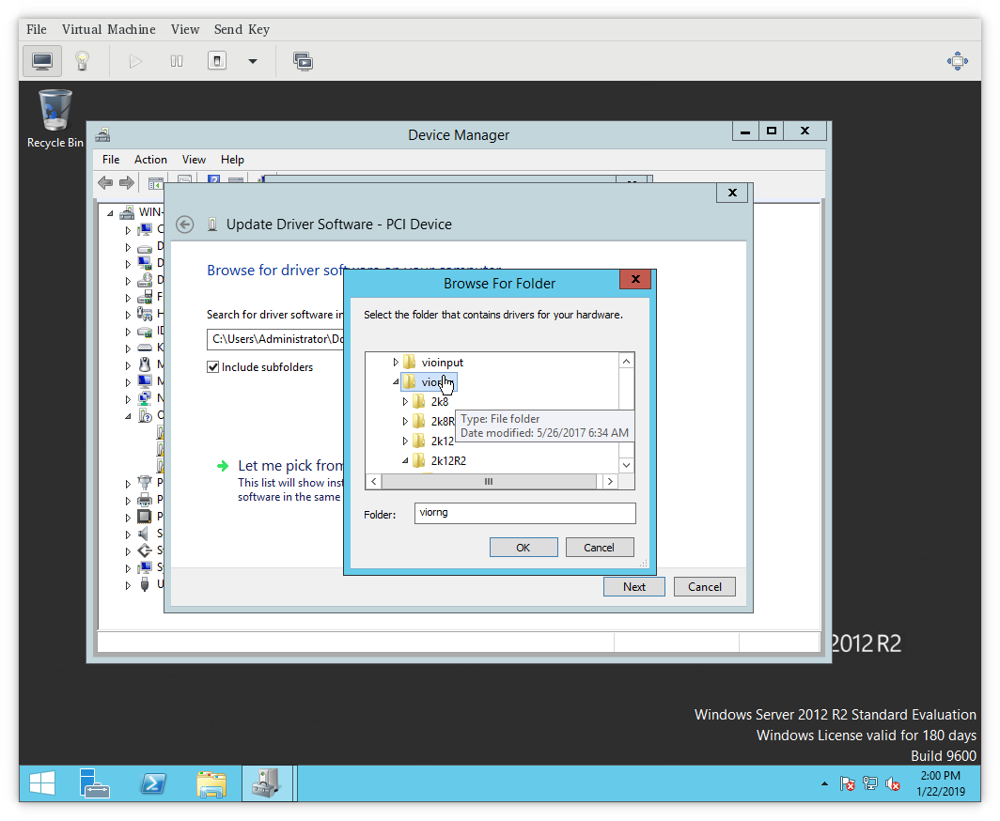

Windows virtio drivers¶
Purpose of this document is to explain how to install virtio drivers for Microsoft Windows running in a fully virtualized guest.
Do I need virtio drivers?¶
Yes. Without the virtio drivers, you cannot use paravirtualized hardware properly. It would either not work, or will have a severe performance penalty.
For more information about VirtIO and paravirtualization, see VirtIO and paravirtualization
For more details on configuring your VirtIO driver please refer to Installing VirtIO driver on a new Windows virtual machine and Installing VirtIO driver on an existing Windows virtual machine.
Which drivers I need to install?¶
There are usually up to 8 possible devices that are required to run Windows smoothly in a virtualized environment. KubeVirt currently supports only:
-
viostor, the block driver, applies to SCSI Controller in the Other devices group.
-
viorng, the entropy source driver, applies to PCI Device in the Other devices group.
-
NetKVM, the network driver, applies to Ethernet Controller in the Other devices group. Available only if a virtio NIC is configured.
Other virtio drivers, that exists and might be supported in the future:
-
Balloon, the balloon driver, applies to PCI Device in the Other devices group
-
vioserial, the paravirtual serial driver, applies to PCI Simple Communications Controller in the Other devices group.
-
vioscsi, the SCSI block driver, applies to SCSI Controller in the Other devices group.
-
qemupciserial, the emulated PCI serial driver, applies to PCI Serial Port in the Other devices group.
-
qxl, the paravirtual video driver, applied to Microsoft Basic Display Adapter in the Display adapters group.
-
pvpanic, the paravirtual panic driver, applies to Unknown device in the Other devices group.
Note
Some drivers are required in the installation phase. When you are installing Windows onto the virtio block storage you have to provide an appropriate virtio driver. Namely, choose viostor driver for your version of Microsoft Windows, eg. does not install XP driver when you run Windows 10.
Other drivers can be installed after the successful windows installation. Again, please install only drivers matching your Windows version.
How to install during Windows install?¶
To install drivers before the Windows starts its install, make sure you have virtio-win package attached to your VirtualMachine as SATA CD-ROM. In the Windows installation, choose advanced install and load driver. Then please navigate to loaded Virtio CD-ROM and install one of viostor or vioscsi, depending on whichever you have set up.
Step by step screenshots:






How to install after Windows install?¶
After windows install, please go to Device Manager. There you should see undetected devices in "available devices" section. You can install virtio drivers one by one going through this list.




For more details on how to choose a proper driver and how to install the driver, please refer to the Windows Guest Virtual Machines on Red Hat Enterprise Linux 7.
How to obtain virtio drivers?¶
The virtio Windows drivers are distributed in a form of containerDisk, which can be simply mounted to the VirtualMachine. The container image, containing the disk is located at: https://quay.io/repository/kubevirt/virtio-container-disk?tab=tags and the image be pulled as any other docker container:
docker pull quay.io/kubevirt/virtio-container-disk
However, pulling image manually is not required, it will be downloaded if not present by Kubernetes when deploying VirtualMachine.
Attaching to VirtualMachine¶
KubeVirt distributes virtio drivers for Microsoft Windows in a form of container disk. The package contains the virtio drivers and QEMU guest agent. The disk was tested on Microsoft Windows Server 2012. Supported Windows version is XP and up.
The package is intended to be used as CD-ROM attached to the virtual machine with Microsoft Windows. It can be used as SATA CDROM during install phase or to provide drivers in an existing Windows installation.
Attaching the virtio-win package can be done simply by adding ContainerDisk to you VirtualMachine.
spec:
domain:
devices:
disks:
- name: virtiocontainerdisk
# Any other disk you want to use, must go before virtioContainerDisk.
# KubeVirt boots from disks in order ther are defined.
# Therefore virtioContainerDisk, must be after bootable disk.
# Other option is to choose boot order explicitly:
# - https://kubevirt.io/api-reference/v0.13.2/definitions.html#_v1_disk
# NOTE: You either specify bootOrder explicitely or sort the items in
# disks. You can not do both at the same time.
# bootOrder: 2
cdrom:
bus: sata
volumes:
- containerDisk:
image: quay.io/kubevirt/virtio-container-disk
name: virtiocontainerdisk
Once you are done installing virtio drivers, you can remove virtio container disk by simply removing the disk from yaml specification and restarting the VirtualMachine.